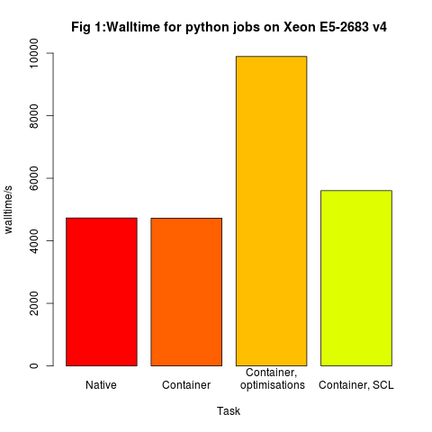
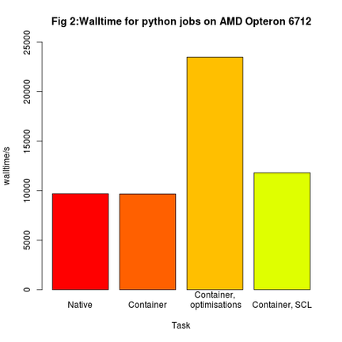
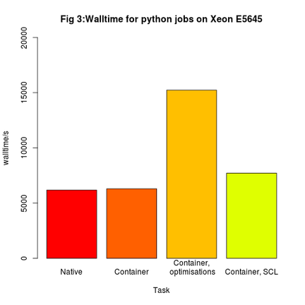

Benchmarking python with singularity containers
Singularity is a container solution designed for HPC. Due to the secure and simple design, it can be easily used to provide applications for use with HPC clusters where other containers, such as Docker would not be suitable.
Testing python inside containers
Linux containers offer a great way to compare software performance on a production system without installing extra packages on your shared filesystem.
After early tests on 3 different node type using python 2.7.8 on CentOS6 containers showed SCL python running the same code between 16-25% more slowly than a self-compiled python 2.7.8 running natively, further tests were performed, instead with CentOS 7.
A single-core python job to find primes of a large number was run natively on a compute node via the Univa Grid Engine job scheduler. The job was then repeated on the same node inside a container running the same version of python compiled with gcc, and also a packaged python provided by the CentOS Software Collections Library. The SCL is marketed as a simple way to get multiple versions of python on your enterprise OS without having to compile new versions. Jobs were run using CentOS 7.3 and python 2.7.13 supplied in the following ways:
- (A) Native OS
- (B) Singularity container, python compiled from source
- (C) Singularity container, python compiled from source, configured with --enable-optimizations flag
- (D) Singularity container, python supplied via CentOS SCL
Where python was compiled, the same gcc version 4.8.5 was used. Tasks A and B can be compared directly to establish if there is any performance impact on using containers vs native OS.
Wallclock Results
The following statistics were averaged over multiple runs using the Grid Engine qacct command, and rounded to the nearest whole number for readability. The total wallclock time is reported by the job scheduler, and includes any overheads a container may introduce, such as time to load a container file.
Processor type: Xeon E5-2683 v4
| Task | cpusecs | ioops | RAM/MB |
|---|---|---|---|
| Native | 4731 | 3751 | 566 |
| Container | 4723 | 3943 | 565 |
| Container, enable-optimisations |
9892 | 3937 | 1184 |
| Container, SCL | 5604 | 3976 | 681 |

Processor type: AMD Opteron 6712
| Task | cpusecs | ioops | mem/MB |
|---|---|---|---|
| Native | 9687 | 3975 | 1160 |
| Container | 9667 | 4166 | 1158 |
| Container, enable-optimisations |
23478 | 4155 | 2810 |
| Container, SCL | 11813 | 4229 | 1436 |

Processor type: Xeon E5645
| Task | cpusecs | ioops | mem/MB |
|---|---|---|---|
| Native | 6186 | 3373 | 741 |
| Container | 6305 | 3569 | 754 |
| Container, enable-optimisations |
15237 | 3573 | 1824 |
| Container, SCL | 7722 | 3634 | 938 |

Summary
It can be observed from the results that there is only a marginal difference of less than 2% between native and containerised python when installed from source. Therefore, tje container does not signicantly affect performance. In fact, the python container was sometimes a few seconds faster. This value is the total wallclock time reported by the job scheduler, and includes the time taken to load the container file.
The SCL python runs consistently slower than the compiled python on all nodes types, suggesting that, although convenient, may not be suitable for HPC environments.
The python compiled with --enable-optimizations performed very poorly, and should be a lesson to system administrators not to blindly follow suggestions without testing. Quite why it performed so badly requires further investigation.
Containers provide an excellent way to provision tricky applications, particularly in the Bioinformatics and Deep-learning disciplines, but additionally provide a safe and easy way to gain performance improvements and new features offered by the latest and greatest versions of common applications, while offering an easy way to compare different configuration and compilation options that, as we have seen, could have significant impact on performance, which is critical in an HPC environment.
Data files
The Singularity definition files used for these tests can be found on Github.